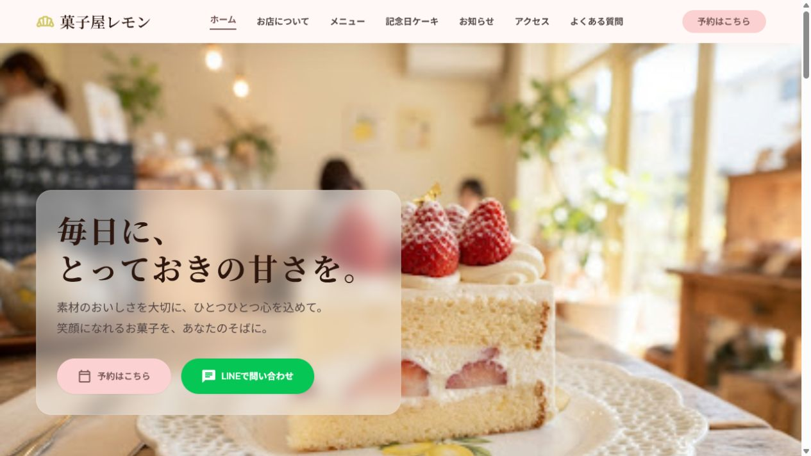

LP・1ページサイト
商品やサービス、お店の魅力を1ページに分かりやすく整理します。スマートフォン対応やお問い合わせ導線も含めて制作します。
- ・オリジナルデザイン
- ・スマートフォン対応
- ・LINE・SNSへの導線
- ・お問い合わせボタン
料金目安 30,000円〜
Services
目的やご予算に合わせて、必要な内容を整理しながらご提案します。
商品やサービス、お店の魅力を1ページに分かりやすく整理します。スマートフォン対応やお問い合わせ導線も含めて制作します。
料金目安 30,000円〜
トップページ、サービス紹介、店舗・会社情報、お問い合わせなど、3〜5ページ程度のホームページを制作します。
料金目安 50,000円〜
お知らせ、メニュー、施工事例などを、お客様自身で更新できるホームページを制作します。
料金目安 内容に応じてお見積り
※ページ数や機能、原稿・画像の準備状況によって料金は変わります。まずはお気軽にご相談ください。
Works
個人店や地域ビジネスを想定し、目的・導線・スマートフォンでの見やすさを意識して制作した自主制作サイトです。

不動産オーナーや民泊運営者向けの空間デザイン事業を想定した自主制作LPです。サービス紹介、施工事例、お問い合わせ導線が自然に伝わる構成にしました。

地域の工務店を想定した自主制作LPです。施工事例、家づくりの強み、資料請求・相談導線が伝わるように整理しました。

飲食店を想定した自主制作LPです。人気メニュー、店舗情報、LINE・SNSへの導線を、スマートフォンでも見やすい構成にしました。

Instagramだけでは伝えにくい定番商品や店舗情報を整理し、来店や予約につなげるホームページを想定して制作しました。
※デモサイトは静的HTML版です。WordPress化により、お知らせ・期間限定メニューを管理画面から更新できる構成を想定しています。
サイトを見る（別タブ）Policy
掲載内容が固まっていない場合でも、ヒアリングを通してお店やサービスの魅力を整理します。
制作内容や料金、今後の流れを事前に共有し、確認しながら制作を進めます。
納品時の操作説明や、公開後の修正・更新についても内容に応じて対応します。
Flow
作りたいサイトの目的、ご希望、ご予算、必要なページなどを確認します。
ヒアリング内容をもとに、制作内容、料金、スケジュールをご提案します。
サイトの構成やデザインを確認していただき、方向性をすり合わせます。
スマートフォン表示も確認しながら制作し、必要な修正を行います。
サーバーへの公開や納品を行い、必要に応じて更新方法をご説明します。
ドメイン・サーバーは、原則としてお客様名義でのご契約をお願いしています。契約や初期設定はサポートします。
Price
内容が固まっていない段階でも大丈夫です。ヒアリング後に、必要な範囲と正式なお見積りをご案内します。
LP・1ページサイト
30,000円〜
小規模ホームページ
50,000円〜
WordPress対応
内容に応じてお見積り
既存サイトの修正
内容を確認後お見積り
About
溝渕 弘一
MK Web Create
愛媛県松山市を拠点に、個人店や中小企業向けのWebサイト制作を行っています。本業では電気設計に携わっており、設計業務で培った情報整理力や課題解決力を活かして、分かりやすく使いやすいWebサイトを制作します。
お客様の目的や伝えたい魅力を丁寧に確認し、相談しながら一つひとつ制作を進めることを大切にしています。
平日夜・土日を中心に対応しています。オンラインで全国からご相談いただけます。
情報整理
情報を整理し、分かりやすい構成を考えます。
進捗共有
丁寧なヒアリングと進捗共有を大切にします。
スマホ重視
スマートフォンでの見やすさを重視します。
導線提案
LINE・Instagramなどを含めた導線をご提案します。
Skills
お知らせやメニューなど、お客様自身で更新したい箇所をWordPressで構築します。
HTML / CSS
構造と読みやすさを意識した実装
Tailwind CSS
効率的なレスポンシブ対応
WordPress
更新したい箇所を管理しやすく設計
レスポンシブ対応
スマートフォンでの見やすさを調整
Git / GitHub
公開や管理を見据えた制作
LINE導線
相談・予約につながるリンク設計
Instagram・Googleマップ
SNSや地図への導線設置
基本的なSEO設定
title・descriptionなどの基本設定
FAQ
はい。ヒアリングをしながら、必要な情報やページ構成を一緒に整理します。
はい。パソコンだけでなく、スマートフォンでも見やすいレスポンシブデザインで制作します。
お客様名義での契約をお願いしていますが、契約方法や初期設定はサポートします。
WordPressを使用することで、お知らせやメニューなどの指定箇所を管理画面から更新できるようにできます。
はい。修正内容を確認し、必要に応じてお見積りのうえ対応します。
Contact
作りたい内容や料金がまだ決まっていない段階でも大丈夫です。現在のお悩みやご希望をお聞きし、必要な内容を一緒に整理します。
相談例
mizobuchi.web.create@gmail.com